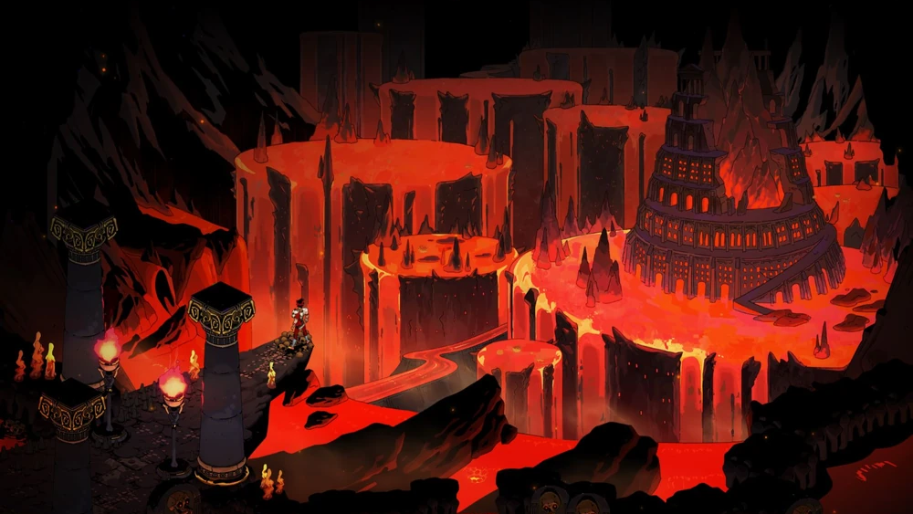
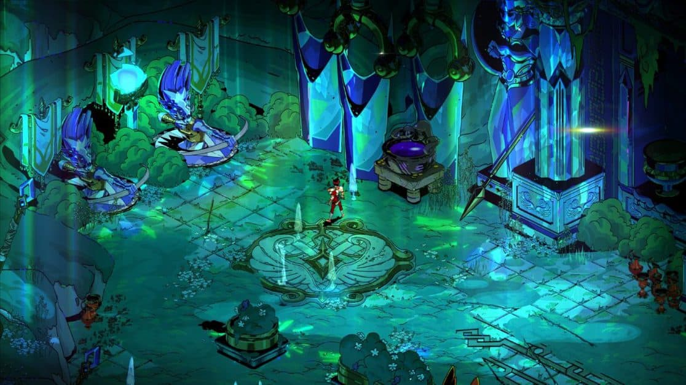
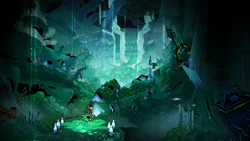
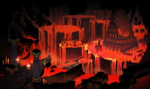
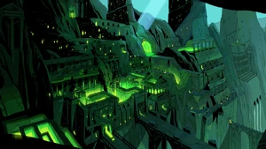
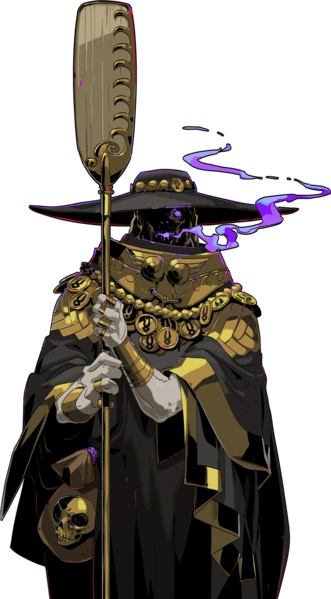
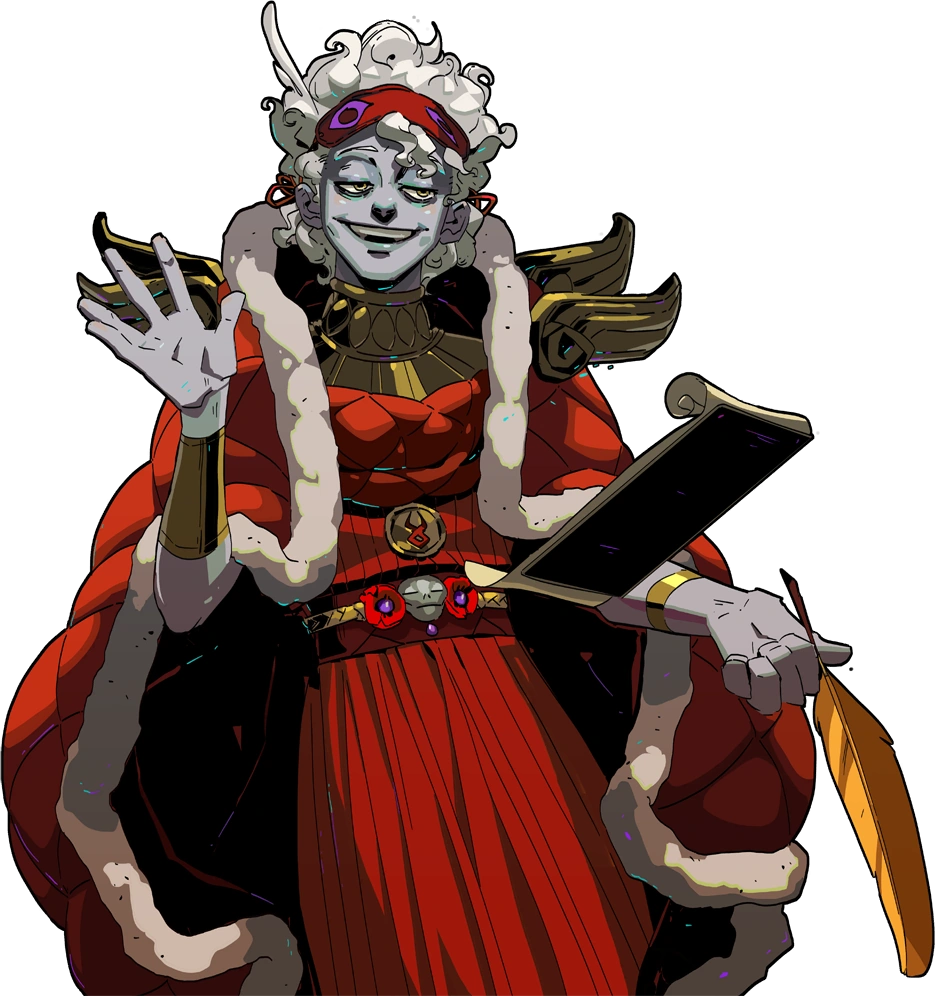

~Харон~




Погрузитесь в уникальное путешествие по завораживающему царству Аида в роли мистического психопомпа!
~Подземный мир~

...Некоторые смертные наверняка хотели бы жить вечно, если бы только могли. Хотя для
здравомыслящих людей лучшим выбором было бы провести вечность на полях Элизиума; в вечность
в этом прекрасном месте, вместе с величайшими душами, когда-либо жившими. Элизиум —
самый эксклюзивный и малонаселенный регион Подземного мира, и даже, пожалуй, самый известный
(хотя Тартар также имеет значительную известность). Только великие попадают туда. Многие смертные
всю свою жизнь стремятся к величию, так и не осознав, что для этого не существует существующей
формулы. Нет даже конкретного определения этого понятия. Здесь величие оценивается несколькими
судьями, которым поручено рассматривать многие дела, которые не может рассмотреть сам Мастер.
Итак, надо сказать, что добраться до Элизиума — немалый подвиг. Жизнь, потраченная на достижение в
печатляющих результатов, — лучшая подготовка, которую я могу придумать.

...Среди многих причин, по которым смертным лучше всего стремиться относиться друг к другу
достаточно хорошо, заключается в том, что, прожив свою короткую жизнь, они могут навечно
застрять друг с другом на лугах Асфоделя. В конце концов, для подавляющего большинства смертных
существует всего несколько направлений. Худшие отправляются в Тартар, величайшие - в Элизиум,
а все остальные - туда. Асфодель - самый быстрый регион Подземного мира, ничем не отличающийся
от парящих плоскостей поверхности, за исключением присутствия вечно горящей реки Флегетон.
Некоторые оттенки Асфоделя выражают озабоченность тем, что река грозит разлиться, поглотить
луга огнём и пеплом. В доме Аида мы преуменьшили вероятность этого; но мы плохо подготовлены к
тому, чтобы справиться с результатом, если он произойдёт. В лучшем случае мы сможем быстро переселить
теней, желающих покинуть окраины Асфоделя.

...Нижние уголки Подземного мира предназначены не только для обители самого Мастера, но и для
блага каждого негодяя, который, переводя дыхание, упустил любую возможность оставить после себя
хоть какое-то положительное впечатление. Тартар — один из самых тщательно продуманных проектов
Мастера, созданный не только для того, чтобы содержать несчастных мертвецов, но и для того, чтобы
угнетать их, наказывать их. Здесь Мастер не жалеет несчастных; он сказал бы, что у них был шанс
и они знали, как опасно вести ненавистную жизнь. Наказание — это все, что остается таким душам;
больше нет шансов на реабилитацию, только страдания. Некоторые с трудом трудятся, в то время как
другие получают специальное практическое лечение, любезно предоставленное надзирателями
Повелителя, которые следят за тем, чтобы Тартар всегда сохранял ту репутацию, которую он имеет.
Лодочник реки Стикс, ответственный за переправу умерших душ через реку в Подземный мир. В греческой мифологии ему требовался один обол в качестве платы за свои услуги, иначе душа, о которой идёт речь, была бы оставлена скитаться по берегам Стикса в течение ста лет.
...Стигийский лодочник - крайне разносторонняя личность, но я боюсь, что он не любитель долгих бесед. Я пытался завести с ним разговор, но, вероятно, был недостаточно настойчив. Хотелось бы знать, откуда у него находится время слоняться туда-сюда, чем он иногда любит заниматься. Казалось бы, будучи проводником недавно умерших, он должен быть постоянно занят. Но каким-то образом он находит время на то, чтобы собирать безделушки и продавать их нам, руководствуясь причинами, известными лишь ему самому. Наверное, у лодочника есть определённая цель, но для меня она непостижима, как и его загадочная манера поведения. Я предпочитаю думать, что он служит цели ещё более высокой, чем владыка.
Харон — настолько древнее божество, что сам Аид называет его древним богом. Слова Ареса и других предполагают, что Аид уважает Харона за его давнюю роль посланника смерти.

Цитата
"Ггахххххх..."

Никта
...Мать-ночь, мы любим называть её так. У неё много-много детей, о которых нужно заботиться, многие из которых сейчас проживают в местах, недоступных моему пониманию.
Гипнос
...Говорят, что Сон - двоюродный брат Смерти. Это оказывается не совсем правильным, поскольку эти двое, на самом деле, братья, рождённые самой Никтой.


Танатос
...Танатос - сама смерть, брат Сна, инструмент, отправляющий смертных в Подземный мир. Немногие боги пересекают границу, разделяющую царство поверхности, где обитают живые, и это царство, где обитают мёртвые.